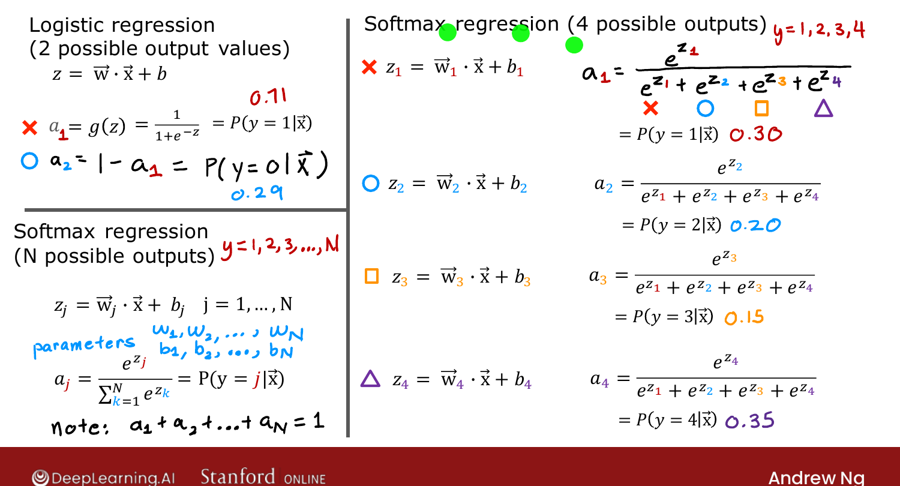
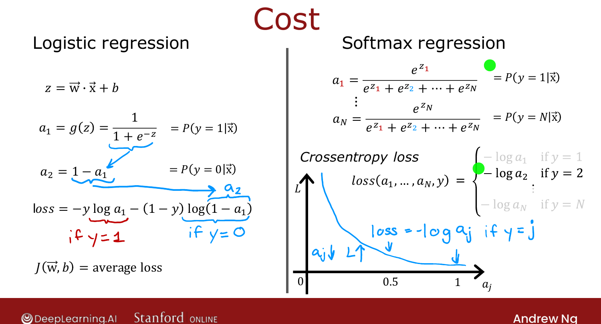

Softmax Regression¶
Course 2 · Week 2 · AI-generated study aid — not authoritative; trust the lecture & cited sources.
Softmax regression generalises logistic regression from binary to multiclass
classification. [00:02]
From logistic to softmax¶
Logistic regression (\(y\in\{0,1\}\)) computes \(z=\vec{w}\cdot\vec{x}+b\) then
\(a=g(z)=P(y=1\mid\vec{x})\). It helps to think of it as computing two numbers:
\(a_1 = P(y=1\mid\vec{x})\) and \(a_2 = 1-a_1 = P(y=0\mid\vec{x})\) — which sum to \(1\). [01:36]
Softmax generalises this. With, say, 4 classes, compute one \(z\) per class:
then convert to probabilities by exponentiating and normalising:
By construction \(a_1+a_2+a_3+a_4 = 1\). (So if \(a_1,a_2,a_3 = 0.30, 0.20, 0.15\), then
\(a_4 = 0.35\).) [04:58]

Official C2 slide — the softmax model (DeepLearning.AI / Stanford).General case¶
For \(N\) classes (\(y\in\{1,\dots,N\}\)):
The \(a_j\) always sum to \(1\). With \(N=2\), softmax reduces to logistic regression (with
slightly different parameters) — which is why softmax is its generalisation. [06:43]
Cost function — cross-entropy¶
Rewrite logistic loss using \(a_2 = 1-a_1\): it's \(-\log a_1\) if \(y=1\), and \(-\log a_2\) if
\(y=0\). Softmax extends this directly: [08:03]
Only the term for the true class is computed (each example has one \(y\)). The curve
\(-\log a_j\) is large when \(a_j\) is small and near \(0\) when \(a_j\to 1\) — so the loss pushes
the model to make the probability of the correct class as large as possible. [11:03]

Official C2 slide — softmax (cross-entropy) cost (DeepLearning.AI / Stanford).Next: drop softmax into the output layer of a neural network. [11:16]
Try it in the browser¶
Try it — implement the softmax function — edit the code, then hit Validate for instant ✓/✗ (runs real Python via Pyodide, no setup):
# Tests(case insensitive)(Ctrl+I)
(Alt+: / Ctrl to reverse the columns)
(Esc)